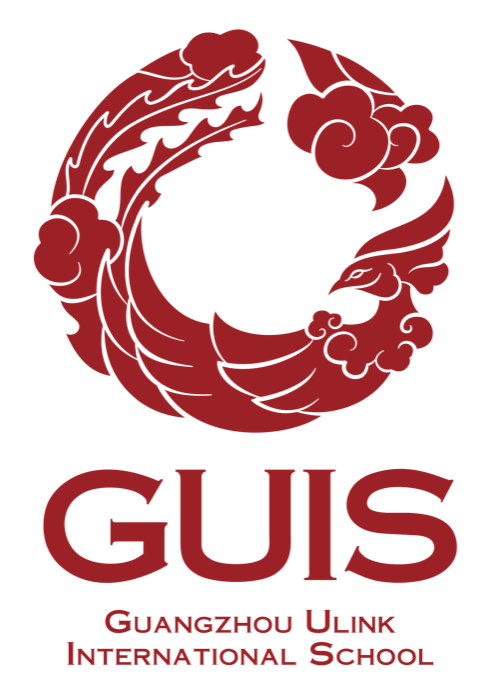
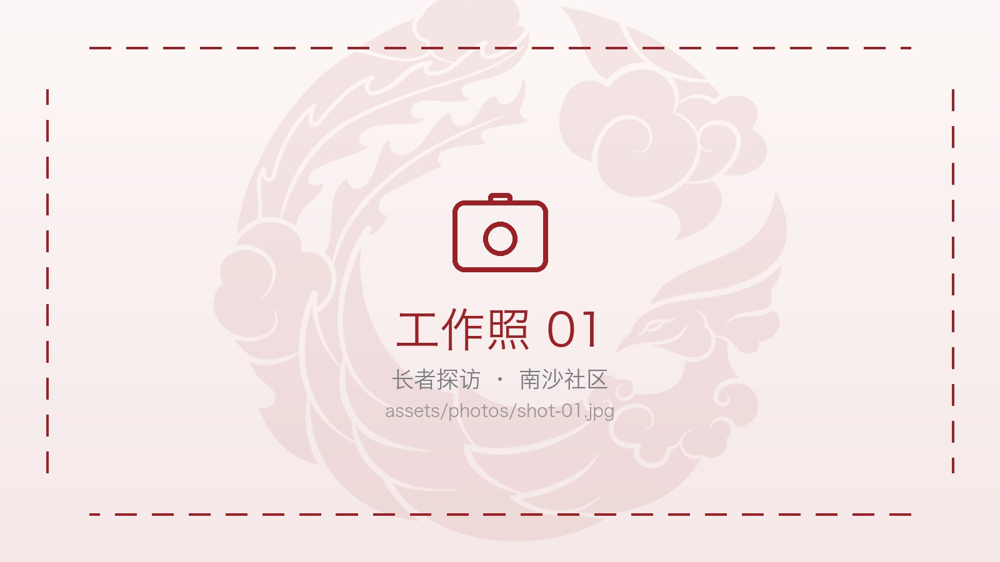
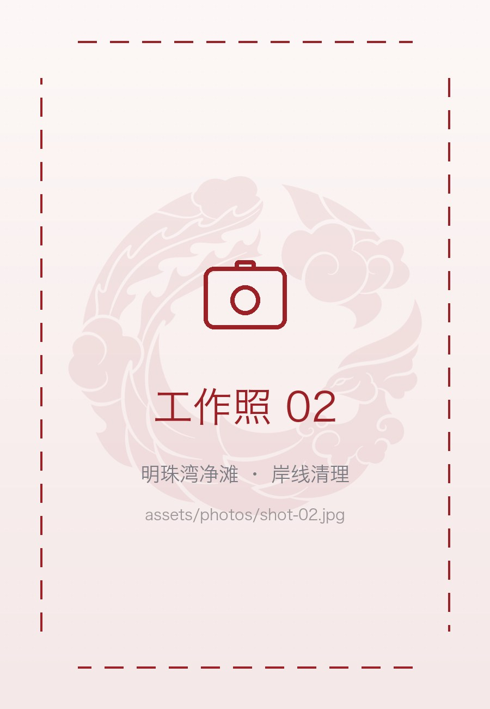
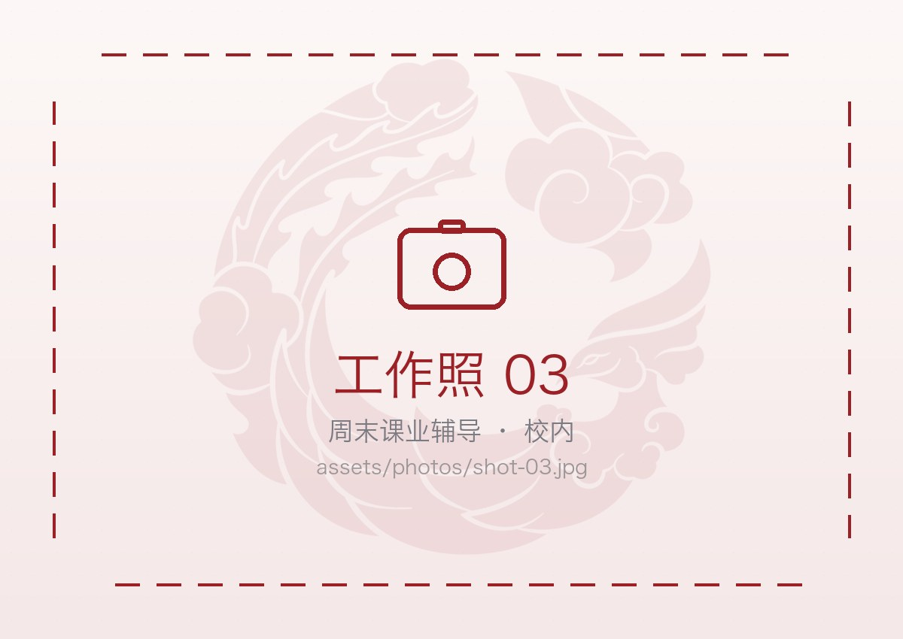
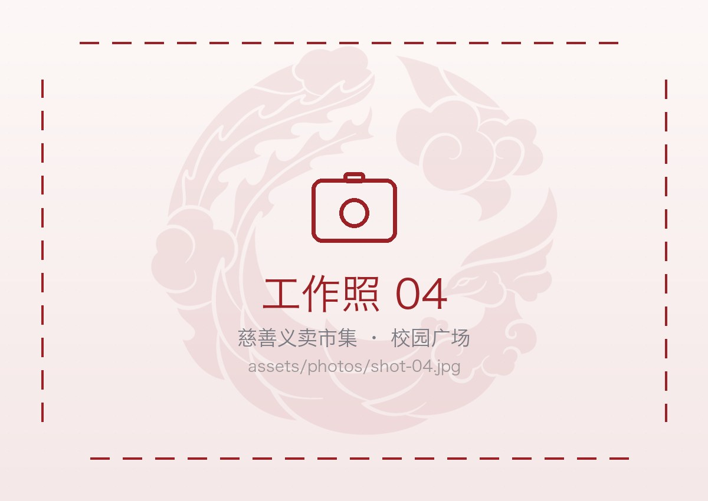
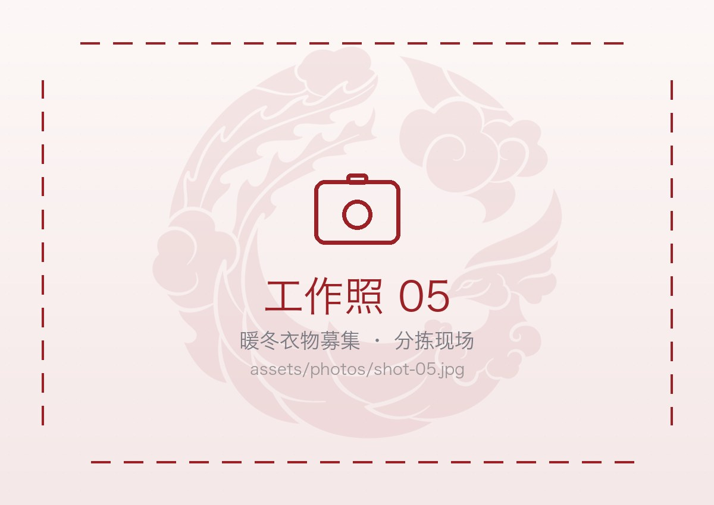
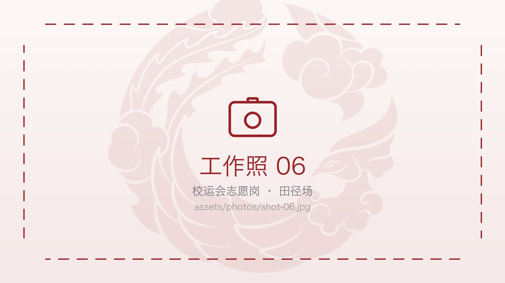
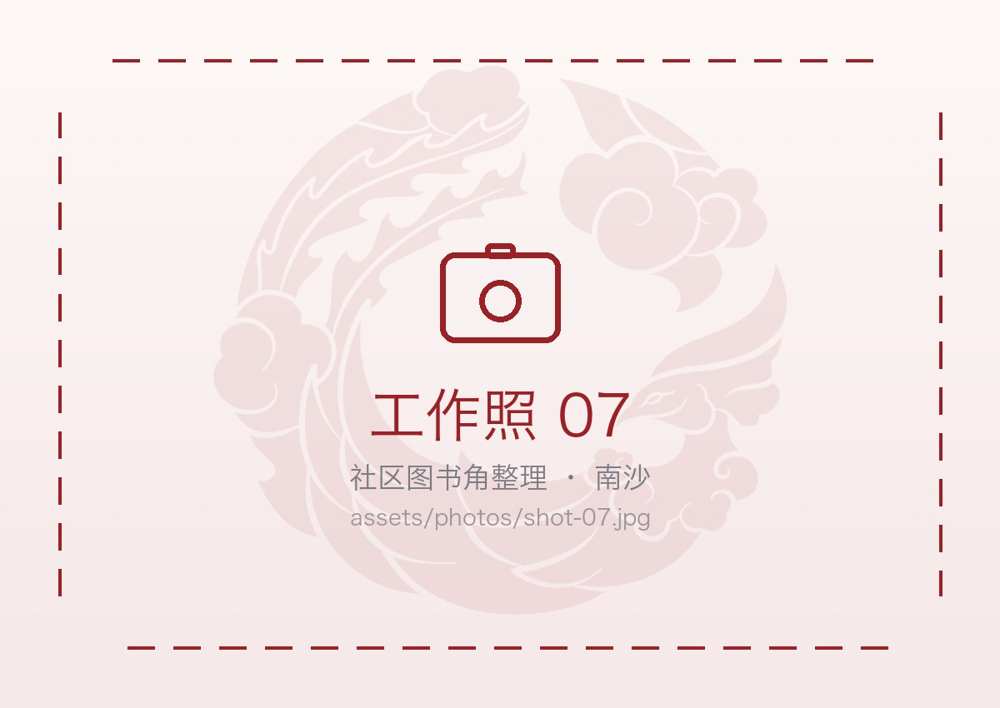
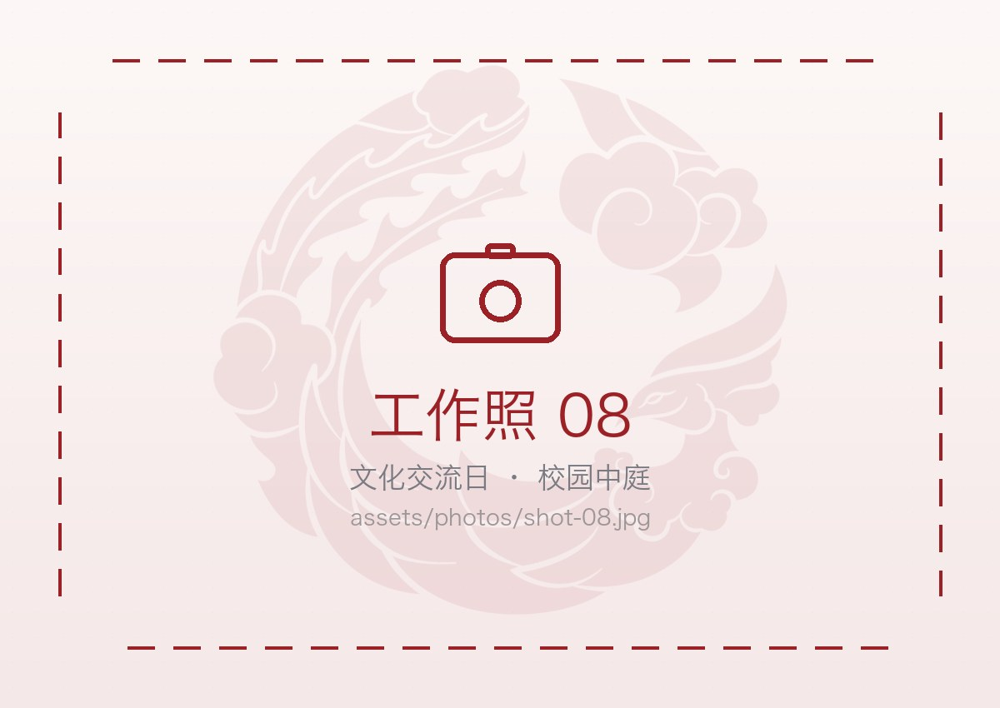

学生事务处活动 (SAO)
校园活动与赛会志愿岗
校运会、校园开放日、国际日等大型活动由学生事务处(SAO)统筹，我们承担签到、引导、计时与后勤等志愿岗位，是很多新成员认识义工组织的第一站。
校运会
校园开放日
引导与计时

GUIS 义工组织由学生自主运营。我们在校园与南沙社区之间，把想法变成有回响的行动 —— 一次探访、一场活动、一次成功举办的义卖。
关于我们
GUIS 义工社成立于广州优联国际学校南沙校园，是由学生自主运营、学生事务处指导的志愿服务组织。我们把「知行合一」放进日程表：不只讨论公益，而是每周固定留出时间，去做一件具体、可被看见、可被复盘的事。
我们的服务半径从校园延伸到明珠湾与南沙社区。所有项目都由学生调研需求、设计方案、招募排班、现场执行，再一起复盘——失败的部分也写进记录，因为真实的经验比漂亮的总结更有用。
服务项目
义工组织按学校的办公室来统筹活动——学生事务处(SAO)、教务处(AO)、升学指导办公室(CAS) 各自牵头，公益募捐与跨办公室的临时行动另作安排。每个板块都从一件小事开始，一年一年往下做。
校运会、校园开放日、国际日等大型活动由学生事务处(SAO)统筹，我们承担签到、引导、计时与后勤等志愿岗位，是很多新成员认识义工组织的第一站。
期中、期末及大型考试期间，按教务处(AO)的安排完成考场布置、物资分发与现场支持，保障考试平稳进行。
在升学指导办公室(CAS)的 Service Learning 框架下，为同学提供周末课业辅导与英文阅读陪伴，固定结对、一学期不换人。
组织校园义卖市集与季节性物资募集，从征集、定价、现场售卖到款项公示全程由学生完成，每一笔都有记录。
明珠湾净滩、长者社区探访等跨主题的常规行动，暂未归入单一办公室，由义工组织统一在这里组织与记录。
中外师生与来访家庭之间的双语导览、翻译与文化工作坊，跨办公室协作，用语言把两个世界接在一起。
活动报名
一眼看清现在有哪些活动在开放报名。点下面的按钮进报名页，选一个活动、填一张表就好 —— 不需要经验，但需要守时。
志愿风采
每一次出勤都有人负责记录。这些照片来自过去一个学年的日常，点开可以看完整画面。








成员架构
义工组织按办公室下设三个部门，每个部门由一位部长牵头、部员协作；另有执委会（社长、副社长）统筹全局。点开每位部长与执委下方的小三角，可以看到他／她的过往履历。
管理层
社长、副社长与三个部门的部长，他们是组织的管理层，均展示完整履历。社长、副社长的信息在 assets/team.js 的 leadership 数组里编辑，三位部长的履历与其部门头像共用同一份数据。
部门成员
每个部门架构相同：一位部长在上、部员在下。只有部长展示过往履历，部员只列头像、姓名与加入时间。所有头像、姓名、加入时间都在 assets/team.js 里编辑。
服务分布
按项目板块统计的服务时长占比（2025–26 学年）。数据每学期更新一次，口径与每位志愿者的个人工时记录一致。
岗位一览
新成员从这些岗位开始。每个岗位都有固定的带队同学与上岗前培训，不需要经验，但需要守时。
重点项目
它们都不是一次性的活动，而是有固定周期、固定负责人、固定记录方式的长期项目。
把社区里闲置的一角改造成儿童阅读空间：墙面翻新、书架自建、图书分类上架，并排定每周的伴读值班表。
沿明珠湾岸线周期性清理垃圾，按材质分类称重并记录来源，再把数据转化成校园减塑倡导的展板与宣讲内容。
面向全校征集冬季衣物，按尺码与季节分类、清洗检查、打包贴标，再交由本地公益仓统一配送。全程公示流向。
为校运会与开放日提供签到、引导、计时、广播与后勤岗位，也是每年新成员最集中的一次实战练兵。
发展历程
义工社不是一天长成现在这样的。下面是几个我们自己觉得还算重要的节点。
社团文化
从需求调研到现场执行都由学生完成，老师只在安全与预算环节提供指导。做错了就复盘，这是我们的成长方式。
每一场活动都有签到、工时与影像留痕，物资与款项按学期公示，家长与学校随时可以查。
成员来自不同的课程体系与文化背景，工作语言在中英之间自然切换，这也是我们服务国际社区的方式。
联系我们
无论你是 GUIS 的同学、愿意合作的社区与机构，还是想参与服务的家长，都欢迎写信告诉我们。我们也接受社区服务需求提报。
volunteer@guiscn.com